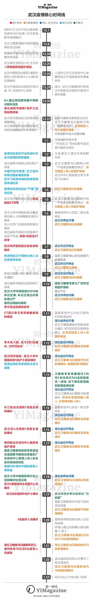

武汉时间：从专家组抵达到封城的谜之20天 - 经济观察网 － 专业财经新闻网站
原文链接 备份链接 韩挺/文 2月6日，武汉市新增新型冠状病毒肺炎病例仍在增加，1501例。根据专家的解释，这仅是通过核酸检测确诊的新增病例，如果考虑到还没有机会接受核酸检测的病患，这并非完整的增加病例数。 武汉乃至湖北是这场全民抗疫战争 …

这条时间线将表明，疫情在早期是如何被发现却又最终被轻视。
记者 | 陈锐、许冰清
制图 | 程 星
2月7日凌晨，因接诊而致感染的武汉市中心医院眼科医生李文亮去世。
回溯疫情早期，2019年12月30日傍晚，武汉卫健委内部文件流出后，“平安武汉”反应迅速，2020年1月1日就通报称依法处理了8名“散布谣言者”。
惩处的过程不止于此——此前曾在同事群中发出提醒的李文亮、谢琳卡和刘文三位医生，此后都被武汉警方约谈，李文亮还于1月3日在派出所内签署了一份《训诫书》。
一名仅在同事微信群发出病毒防护提示就被警方以“造谣”名义训诫的医护人员，最终却因新型冠状病毒肺炎疫情扩散而感染病重去世，令人心痛。
这场由数名一线医生提示了人际感染风险却仍未引起官方重视的疫情，在早期究竟是如何蔓延的呢？
假如从钟南山接受央视采访时首次明确“新冠病毒人传人”的1月20日开始计算，武汉新型冠状病毒肺炎疫情升级成为全国性的公共卫生紧急事件至今已有19天。
再早一点，从第一财经首次报道确认武汉出现不明原因肺炎的12月31日算，则已有39天。
但疫情的起点显然既不是12月31日，也不是1月20日。
现在，随着各媒体对疫情报道的推进，随着国家和地方政府、各级卫健委更广泛和详尽的信息披露，越来越多的疫情关键信息和细节开始展现。
将它们拼凑、串联，便可大致得到一条时间线。这条时间线将表明，疫情在早期是如何被发现却又最终被轻视。
以下是《第一财经》YiMagazine整理的时间线，起点为2019年12月1日武汉市首例病人的发病，终点为1月23日的武汉“封城”。所有线索皆来自具备权威性的媒体报道、发表于国际权威医疗期刊的论文、各类官方披露及机构官方自述。所有事件，我们都做了核实并且随附链接（点击蓝色字体可链接到相关出处）。
我们尽力严谨，恐怕仍难以避免错漏。欢迎读者指正和补充。相信还有更多事实和细节等待披露和报道，这正是媒体在重大公共事件中应有的价值。而越多细节也将越帮助我们理解过程，接近真相。
_
2019年12月1日
《柳叶刀》流行病学回顾调查表明首位新型冠状病毒肺炎确诊病例当日发病（无华南海鲜批发市场接触史）
_
2019年12月8日
武汉卫健委1月11日通报的首例新型冠状病毒肺炎确诊病例发病
_
2019年12月10日
武汉第6例死亡的新冠确诊病人当日发病；
《柳叶刀》流行病学回顾调查提及3位新冠确诊病例发病
_
2019年12月20日
医疗耗材厂商“稳健医疗”取消在湖北召开高管年终会议的计划
_
2019年12月25日前后
武汉市第五医院消化内科主任吕小红听说武汉两家医院有医护人员感染不明原因肺炎
_
2019年12月26日
湖北省中西医结合医院呼吸内科主任张继先将4位病人的反常结果汇报给医院，医院上报至江汉区疾控部门；
上海市公共卫生临床中心收集到武汉市中心医院和武汉市疾控中心的不明原因发热患者标本
_
2019年12月29日
湖北省中西医结合医院开始向省、市、区疾控中心反映情况；
湖北省和武汉市卫健委指示武汉市疾控中心、武汉金银潭医院和江汉区疾控中心到湖北省中西医结合医院开始流行病学调查
_
2019年12月30日
李文亮、刘文、谢琳卡等医生通过微信群向同事发出提醒；
湖北省新华医院1位护士出现轻微感染；
中科院武汉病毒所完成新型冠状病毒样本的收集和标准化入库；
湖北省和武汉市的卫生部门启动相关调查和病例搜索工作；
网传武汉市卫健委医政医管处内部通知称“武汉出现不明原因肺炎”，且与华南海鲜批发市场有关
_
2019年12月31日
武汉协和医院设立呼吸传染病隔离区；
武汉某医院收到针对华南海鲜批发市场密切接触人群排查的文件类指令；
华南海鲜批发市场大规模消毒；
武汉市卫健委热线回应第一财经确认武汉出现不明原因肺炎，当日对外通报共发现27例“病毒性肺炎”，未发现“明显人传人”和“医护感染”
_
2020年1月1日
国家卫健委成立疫情领导小组；
华南海鲜批发市场关停；
“平安武汉”当日发布微博称8名散布谣言者被依法处理
_
2020年1月2日
大批清洁工清洁华南海鲜市场；
中科院武汉病毒所获得2019新型冠状病毒全基因组序列；
香港特区政府召开跨部门会议，检视针对武汉肺炎疫情的预防措施
_
2020年1月3日
湖北省新华医院CT医生李云华发现3例CT异常；
武汉市全市启动对不明原因病毒性肺炎的监测、病例调查、华南海鲜市场环境及动物调查和标本采集工作；
中国开始向美国通报疫情信息和防控措施、向世卫组织和周边国家通报疫情；
武汉飞往新加坡的旅客抵达樟宜机场时需接受体温检测；
武汉市卫健委当日通报共发现44例“不明原因的病毒性肺炎”，未发现“明显人传人”和“医护感染”；
武汉市中心医院医生李文亮在武汉某派出所内签下训诫书
_
2020年1月4日
国家疾控中心研制出对新型冠状病毒高特异性的PCR检测试剂；
香港特区政府启动“严重”级别应变；
武汉市卫健委当日无通报
_
2020年1月5日
武汉同济医院急诊科医生陆俊CT异常；
世界卫生组织首次就中国不明原因肺炎发布新闻；
武汉市卫健委当日通报共发现59例“不明原因的病毒性肺炎”，未发现“明显人传人”和“医护感染”
_
2020年1月6日
武汉大学中南医院收治一名多家医院拒收的重症病人后将其隔离在急诊，同时改造ICU，预留16张隔离床位；
吕小红在第五医院的门诊开始接到很多疑似病例；
湖北省新华医院内部开会强调“不造谣不传谣”，该院一名无华南海鲜市场接触史的呼吸内科医生CT异常；
国家疾控中心内部启动二级应急响应；
武汉市“两会”开幕；
当日武汉市卫健委无通报
_
2020年1月7日
武汉同济医院急诊科医生陆俊确诊；
国家疾控中心成功分离首株新型冠状病毒毒株；
武汉市召开“两会”；
当日武汉市卫健委无通报
_
2020年1月8日
国家卫健委专家组确认新型冠状病毒为疫情病源；
王广发参与的国家卫健委专家组到达武汉；
香港特区政府将武汉不明原因的病毒性肺炎纳入法定监管传染病；
武汉市召开“两会”；
当日武汉市卫健委无通报
_
2020年1月9日
武汉出现首例新冠死亡病例；
武汉市召开“两会”；
当日武汉市卫健委无通报
_
2020年1月10日
湖北省新华医院CT医生李云华发现30例CT异常；
香港大学深圳医院收治2名呼吸道疾病患者；
武汉大学中南医院ICU的16张床位住满，重症医学科主任彭志勇上报指出诊断标准过于严苛；
黄冈市中心医院发热门诊的一名医生被告知黄冈出现疑似病例；
国家疾控中心与世界卫生组织和各国分享了新冠病毒的全基因序列；
国家卫健委专家组专家王广发对公众表示没有出现医护感染；
武汉市“两会”闭幕；
当日武汉市卫健委无通报；
2020年全国铁路春运正式启动；
李文亮出现感染症状
_
2020年1月11日
国家疾控中心向武汉提供PCR检测试剂；
湖北省“两会”开幕；
武汉市卫健委当日通报称共发现41例新型冠状病毒感染肺炎确诊病例，1月3日之后无新感染病人，未发现“明显人传人”和“医护感染”；
CT显示李文亮双肺磨玻璃样病变
_
2020年1月12日
湖北省召开“两会”；
武汉市卫健委当日通报无新增确诊病例；
李文亮入院，后于2月1日确诊，2月7日去世
_
2020年1月13日
武汉3名护士当日确诊；
湖北省召开“两会”；
武汉市卫健委当日通报市内无新增确诊病例、泰国通报1例确诊
_
2020年1月14日
国家卫健委召开全国卫生健康系统视频会议，通报疫情；
一个赴武汉参会的黄冈下辖县代表团数名成员入院，两名重症；
一名试剂盒代理商被同行询问在哪里可以购买到防护服；
卫健委专家徐建国对《科学》杂志表示，763名密接者无一感染，疫情程度有限，如下周无新增病例或将结束；
湖北省召开“两会”；
武汉市卫健委当日通报无新增确诊病例，称尚未发现明确人传人，不排除有限人传人
_
2020年1月15日
长江航运总医院1名医生当日确诊；
国家疾控中心内部启动一级应急响应；
国家卫健委发布第一版诊疗方案；
湖北省召开“两会”；
武汉市卫健委当日通报无新增确诊病例
_
2020年1月16日
湖北省新华医院耳鼻喉科主任梁武东CT异常；
武汉亚心总医院1名医生当日确诊；
湖北省召开“两会”；
武汉市卫健委当日通报无新增确诊病例
_
2020年1月17日
黄冈市某眼科医院医生接到中心医院朋友电话，了解到有医护感染；
国家卫健委高级别专家组成员袁国勇书面报告高福和广东省疾控中心，警惕人传人和无症状感染的风险
美国CDC召开媒体通气会宣布将对中国游客做入境口岸筛查；
湖北省“两会”闭幕；
武汉市卫健委当日无通报
_
2020年1月18日
湖北省新华医院CT医生李云华发现100例CT异常；
专家组到武汉大学中南医院考察，彭志勇再次反映确诊标准过高；
有两名新型冠状病毒肺炎疑似患者在深圳三院隔离治疗；
武汉3家医院共4名医护人员当日确诊；
国家卫健委发布《新型冠状病毒感染的肺炎诊疗方案（试行第二版）》；
武汉市卫健委通报市内新增4例确诊病例、泰国、日本各新增1例确诊病例
_
2020年1月19日
武汉市百步亭社区举办“万家宴”；
武汉协和医院9名护士当日确诊；
国家卫健委成立肺炎疫情应对领导小组；
国家卫健委高级别专家组成员钟南山当日下午结束武汉考察、对外发出预警，各医院紧急开会；
国家卫健委宣布对外下放PCR快速检测试剂盒，但直到1月22日武汉三家定点医院都没有拿到；
武汉市卫健委通报新增17例确诊病例
_
2020年1月20日
国务院同意将新型冠状病毒肺炎纳入传染病法和卫生检疫法管理；
钟南山在接受央视连线时明确表示新型冠状病毒“人传人”；
黄冈市蕲春县县长在全县防控会议上称当时黄冈市“病毒性肺炎”病例已达109例；
三家PCR检测试剂盒品牌被紧急通知可以使用；
武汉3名医护人员确诊；
武汉市卫健委当日通报2日内共计136例新增确诊病例
_
2020年1月21日
武汉市卫健委通报15例医护感染；
黄冈市通报4例医护感染；
湖北省卫健委当日通报省内72例新增确诊病例
_
2020年1月22日
国家卫健委发布《新型冠状病毒感染的肺炎诊疗方案（试行第三版）》；
湖北省启动突发公共事件二级应急响应
湖北省卫健委当日通报省内105例新增确诊病例
_
2020年1月23日
武汉自上午10时起“封城”

本文版权归第一财经所有，
未经许可不得转载或翻译。

原文链接 备份链接 韩挺/文 2月6日，武汉市新增新型冠状病毒肺炎病例仍在增加，1501例。根据专家的解释，这仅是通过核酸检测确诊的新增病例，如果考虑到还没有机会接受核酸检测的病患，这并非完整的增加病例数。 武汉乃至湖北是这场全民抗疫战争 …
原文链接 备份链接 截至1月21日24时，13个省（区、市）累计报告新型肺炎确诊病例440例。 专家认为，1月18日以来确诊病例迅速增加，有疫情由“一代病例”转为“二代病例”的因素。 此次冠状病毒肺炎疫情传播，可明确是二代病例的，迄 …
原文链接 备份链接 根据丁香医生实时数据，截至 2020 年 2 月 7 日 18 时，全国累计确诊病例 31253 例，疑似病例 26359 例，新增确诊病例 3193 例，新增疑似病例 4833 例。其中，重症病例 4821 例，死亡 …
原文链接 备份链接 在接受媒体采访时，被问及康复后有什么计划，李文亮说：“恢复以后还是要上一线，疫情还在扩散，不想当逃兵！至于疫情以后的事，还没想太多。” 全文2071字，阅读约需4分钟 2月7日凌晨，武汉中心医院官方微博发布消息：我院 …
原文链接 备份链接 世上没有从天而降的英雄，只有挺身而出的凡人。 李文亮医生走了。 2020年2月7日凌晨3点48分，武汉市中心医院微博发布消息：我院眼科医生李文亮，在抗击新型冠状病毒感染的肺炎疫情工作中不幸感染，经全力抢救无效， …